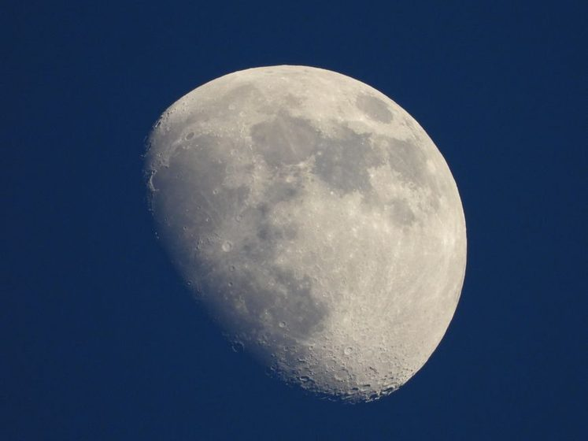
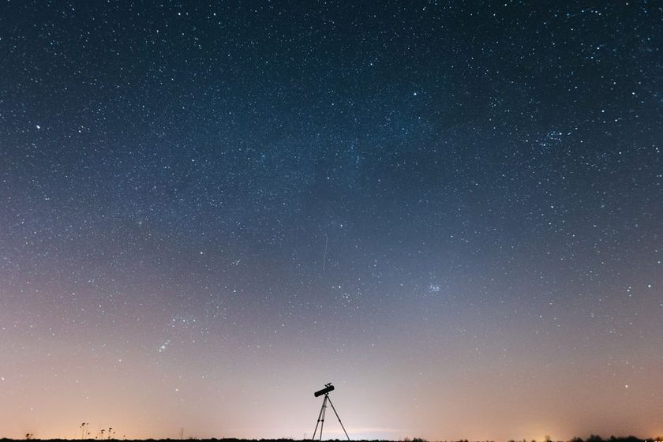
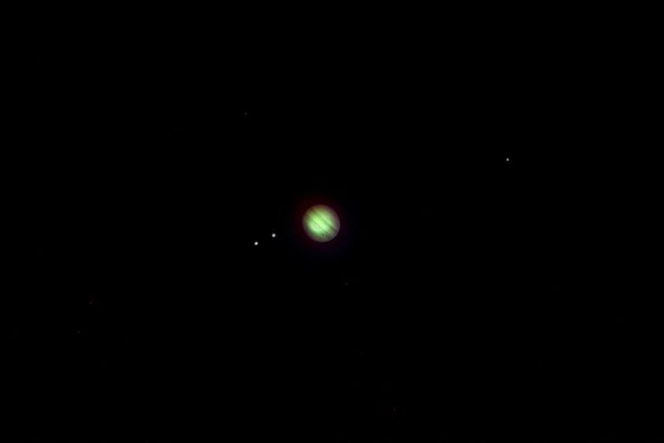

Everything I Check the Afternoon Before a Clear Night
Clear skies get wasted more often by a lack of a plan than by clouds. The short list that gets run through before the gear ever comes out.
April 2, 2026Full moon nights are the ones people picture, and the ones with the least to actually look at. Notes on tracking the shadow line instead.
Moon · March 10, 2026

Every full moon, the same photo shows up in the same feed: a huge, perfectly round, blazing white disc, captioned with something about how bright the sky was that night. It's the phase most people picture when they picture "the moon," and it is, from a Bortle 7 patio with a 6-inch reflector, the single least interesting night of the month to actually point a telescope at it. Nothing is wrong with the equipment and nothing is wrong with the sky. The problem is the sun. At full moon, sunlight comes in almost straight down the barrel of the eyepiece, flattening every crater, ridge, and rille into the same shade of glare. The real show happens on the nights nobody photographs — the ones with a visible line of shadow cutting across the disc, turning a flat white circle into a landscape.
A beginner's instinct is reasonable: the full moon is the brightest, easiest target in the sky that week, so it seems like the obvious night to finally use a new eyepiece. What actually happens is closer to looking at a lit ceiling than a landscape. When the sun sits almost directly behind an observer on Earth, it also sits almost directly overhead every point on the lunar near side, meaning every crater wall, rim, and floor gets hit by light from nearly the same angle. Shadows collapse to almost nothing. Craters that look dramatic in photos taken a week earlier or later go nearly flat, and the whole disc reads as one bright, slightly mottled plate. Light pollution has little to do with it — the moon is bright enough to punch through a Bortle 7 sky at any phase. The detail goes missing for a lighting reason, not a sky-quality one, and no amount of extra aperture fixes a lighting problem.
The terminator is the boundary between the lit and unlit halves of the moon — lunar sunrise on one side of the disc, lunar sunset on the other, depending on the phase. Along that line the sun sits low on the lunar horizon, the same way it does on Earth in the last half hour before dusk, and low sun does one thing full sun never does: it throws long shadows. A crater rim that vanishes into the glare at full moon can, a few nights earlier or later, cast a shadow stretching most of the way across its own floor. Mountain ranges that read as faint smudges under full illumination turn into a jagged, three-dimensional edge right at the terminator. None of this needs a bigger telescope. A steadied 8x42 pair of binoculars, or a small reflector at low power, is usually enough to see the relief along that line, because the relief is doing the work, not the optics.
A full moon is a photograph taken at noon. The terminator is the same landscape at golden hour — and it moves a little farther across the disc every night.
The terminator isn't fixed. It sweeps across the visible disc roughly 12 degrees of longitude a day, crossing the whole near side over about two weeks between new moon and full. That means the features worth tracking change on almost every clear night, which is part of why a short log helps more here than with most other targets in the sky. The table below sketches a rough week around one recent first-quarter stretch — a pattern to watch for, not a fixed schedule, since the actual dates shift with the current lunar cycle and your own time zone.
| Days after new moon | Terminator region | Feature worth tracking | Best seen with | Note from the yard |
|---|---|---|---|---|
| Day 5–6 | Southern highlands | Theophilus and its terraced wall | 6" reflector, medium power | Shadow fills roughly half the crater floor |
| Day 7 (first quarter) | Straight down the disc's midline | Copernicus rim and central peak | 8x42 binoculars, steadied | Easiest single night to start a log |
| Day 9–10 | Northern Mare Imbrium edge | The Apennine mountain front | Small reflector, low power | Range reads as a jagged edge, not a smudge |
| Day 12–13 | Approaching the eastern limb | Tycho's rim before the rays dominate | Naked eye, binoculars help | Last good night for shadow relief there |
| Day 14 (full) | Terminator gone | Nothing — disc is fully lit | Any | Worth a glance, not worth setting up for |
It's tempting to blame a flat-looking full moon on a cheap eyepiece or a small mirror, and to try to fix it with a bigger scope. The gap closes with a calendar, not a purchase. A modest 6-inch reflector pointed at a well-placed terminator will often show more relief in five minutes than a much larger scope pointed at a full disc shows in an hour, because the light itself is doing the work the optics can't fake.
A couple of spots keep earning a second look from the patio, mostly because they behave differently every time the terminator crosses them:
None of these need a star chart to find. The terminator line itself points at them.
Most of what gets written on this site is about working around a lit sky — reading what an actual Bortle map doesn't tell you until you're standing in the yard, or figuring out why a target that should be easy, like the Orion Nebula through a wall of streetlight, stays stubbornly faint. The moon is the exception. It's bright enough that a streetlight two houses down barely registers as competition, at any phase. The limiting factor here is never sky glow; it's whether the terminator happens to be crossing something worth looking at that night, and whether the air is steady enough to hold a sharp shadow edge instead of a shimmering one. That second part is closer to a seeing problem than a light-pollution problem, and it rewards checking conditions the same way any other target does.
The habit that's made the biggest difference isn't a piece of gear — it's a two-line note after each session: the day count since new moon, and which crater or range actually held a sharp shadow that night. Read back a few weeks later, the log turns into a rough personal map of which terminator position suits which feature, useful the next time a clear night shows up with the moon already half risen and no time to look anything up.
This piece describes one observer's own log from a single suburban yard, not a lunar ephemeris. Terminator timing shifts with the date, your longitude, and the current lunar cycle, so the day-count table above is a pattern to watch for, not a fixed schedule — check a planetarium app or almanac for the current month's actual terminator position before planning a session around it.

Clear skies get wasted more often by a lack of a plan than by clouds. The short list that gets run through before the gear ever comes out.
April 2, 2026
A wider aperture telescope sounds like the obvious next step. In a lit backyard, it usually isn't — here's the case for spending on glass you already own.
February 24, 2026
Not every "planet parade" headline holds up once streetlights get involved. Here's what actually cleared the roofline and what got lost in the glow.
January 14, 2026